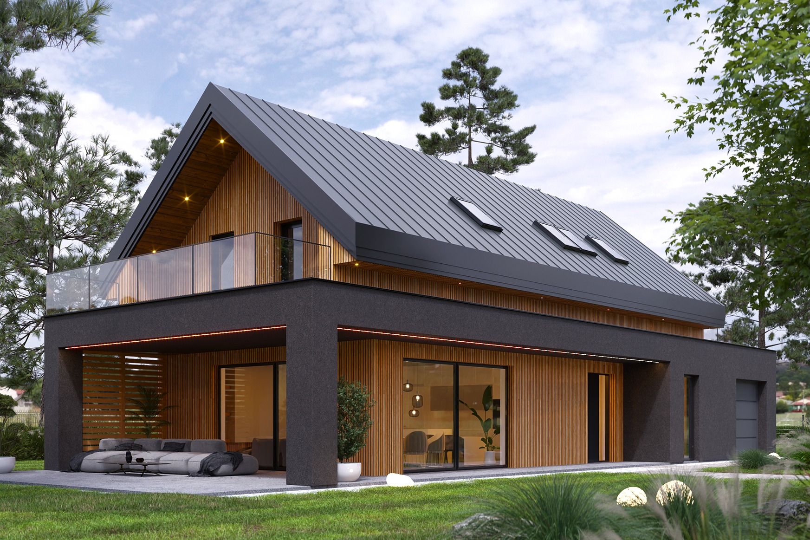

Około 16,35% nominalnej powierzchni działki 874 m², z garażem.
CHWASZCZYNO · DZIAŁKA 750/74Dom w głębi działki.
Dom w głębi działki.
Salon na ogród.
Przykładowe zagospodarowanie z projektem Nasza Stodoła M, wersja szkieletowa — KRY1007. Dom cofnięty ku północno-wschodniej granicy i przesunięty o około 1 m na północny zachód po zamknięciu dwóch bocznych okien parteru w garażu i kotłowni. Garaż od strony drogi na południowym zachodzie. Podjazd biegnie blisko północno-zachodniej granicy i łagodnie skręca do garażu. Salon i taras otwierają się na południowo-wschodnią część ogrodu.
220508_5.0004.750/74Wariant koncepcyjnyZachowana bryła.
Zachowana bryła.
NW: pełna ściana i 3 m.
Zachowano katalogowe gabaryty 18,00 × 8,70 m i układ parteru bez odbicia lustrzanego; zamknięto dwa boczne okna od NW. Przyjęto 3 m od granicy NW, 4 m od NE i linię 6 m od granicy drogi. To założenia przykładu do sprawdzenia w pełnej WZ i adaptacji.
Zobacz rzut z góry ↓
Na południe od pełnej strefy domu i tarasu, poza podjazdem.
Wolny teren po rezerwach na dom, taras i podjazd; nie bilans PBC.
01
Garaż od drogi, dom przy granicy NE
Brama garażowa jest na długiej elewacji projektu, dlatego właśnie ta elewacja jest zwrócona na południowy zachód, ku drodze. Garaż znajduje się przy północno-zachodnim końcu domu, a salon i taras przy południowo-wschodnim. Budynek cofnięto do przyjętych 4 m od tylnej granicy NE i przesunięto do 3 m od granicy NW po założonej likwidacji dwóch bocznych okien parteru. Brama garażowa od strony drogi pozostaje.
3,00 / 4,00 mod granicy NW / NE do obwiedni ścian
18,55 mod granicy drogi do elewacji garażu
3,00 mszerokości podjazdu; plac przed garażem 5 × 4 m
 Powiększ rzut ↗
Powiększ rzut ↗Podjazd
Blisko granicy, łagodnie do bramy
Przy wjeździe między krawędzią podjazdu a granicą NW pozostawiono 0,50 m; brama wjazdowa ma umownie 4 m. Dalej podjazd odchodzi od granicy i przechodzi w plac 5 × 4 m przy jednostanowiskowym garażu z bramą 2,50 m. Pole podjazdu poza strefą domu wynosi 61,6 m².
Do adaptacji
Zjazd i manewrowanie
Pokazano przebieg i szerokości dojazdu. Nie wykonano pełnej obwiedni ruchu konkretnego samochodu, analizy wyjazdu tyłem, sprawdzenia zjazdu z drogi ani odwodnienia. Nie jest to potwierdzenie warunków technicznych lub prawnego dostępu.
02
210,0 m² ogrodu od południa
Południową część tworzą sekcje A, B i C — łącznie 210,0 m². Leżą poniżej linii wschód–zachód przez najbardziej południowy punkt pełnej strefy domu i tarasu. Sekcje D–F obejmują pozostały wolny teren, w tym duży ogród przed domem i boczne pasy.
 Powiększ podział ogrodu ↗
Powiększ podział ogrodu ↗| Sekcja | Położenie | Powierzchnia |
|---|---|---|
| A | Południowo-zachodni | 50,8 m² |
| B | Południowy środkowy | 108,1 m² |
| C | Południowo-wschodni | 51,2 m² |
| D | Przed domem · od drogi | 225,7 m² |
| E | Przy tarasie i za domem | 152,5 m² |
| F | Północny narożnik | 41,1 m² |
| Ogród od południa · A+B+C | 210,0 m² | |
| Cały ogród · A–F | 629,3 m² | |
| Przeznaczenie w przykładzie | Powierzchnia |
|---|---|
| Ogród A–F | 629,3 m² |
| Rezerwa domu, tarasu, podcienia i wejścia | 183,3 m² |
| Podjazd poza rezerwą domu | 61,6 m² |
| Razem · geometria ULDK w PL-2000 | 874,3 m² |
Sumy policzono przed zaokrągleniem; sumowanie etykiet może dać różnicę 0,1 m². Nominalne 874 m² służy do wskaźnika zabudowy, a 874,26 m² to pole geometrii ULDK po przeliczeniu do PL-2000. Dane obliczeń ↗
Wolny teren, nie potwierdzony suchy ogród. Powierzchnie obejmują również pasy boczne. Dodatkowe chodniki, instalacje, miejsca postojowe i zagospodarowanie mogą je zmniejszyć. Nie potwierdzono suchości, nasłonecznienia ani bilansu powierzchni biologicznie czynnej.
03
Nasza Stodoła M · wersja szkieletowa
| Parametr | Wartość |
|---|---|
| Wersja | Adaptacja wersji podstawowej, bez odbicia lustrzanego: zamknięte dwa boczne okna NW |
| Gabaryty głównej bryły | 18,00 × 8,70 m; taras wystaje poza te gabaryty |
| Katalogowa powierzchnia zabudowy | 142,90 m² · około 16,35% działki |
| Przyjęty w rozmowie próg 17% | 148,58 m² · projekt mniejszy o 5,68 m², bez skalowania |
| Dach / wysokość katalogowa | Dwuspadowy 40° / 8,62 m |
| Garaż / strefa dzienna | 1 stanowisko, 19,10 m² / salon, jadalnia i kuchnia 48,40 m² |
| Rezerwa do bilansu ogrodu | 183,3 m²: pełna obwiednia domu z tarasem, podcieniem i wejściem |
Rezerwa 183,3 m² obejmuje też przestrzenie w obwiedni, których katalog nie zalicza do powierzchni zabudowy. Nie jest wynikiem mnożenia gabarytów 18 × 8,70 m ani zamiennikiem katalogowych 142,90 m².
Zobacz projekt domu ↗04
Założenia i źródła
Przykład
NW 3 m po zamknięciu okien, NE 4 m i linia 6 m
6 m od granicy parceli drogowej to założenie wskazane przez użytkownika. 3 m od NW przy pełnej ścianie oraz 4 m od NE przyjęto roboczo na potrzeby usytuowania. Nie utożsamiamy ich z potwierdzonymi warunkami WZ. Próg 17% jest parametrem tego przykładu; wcześniejsza deklaracja WZ 20% w głównej analizie zachowuje własną podstawę i datę.
Do weryfikacji
Pełna WZ, wystające elementy i teren
Adaptacja musi uwzględnić zamknięcie bocznych okien parteru i wymagania doświetlenia oraz wentylacji, pełną WZ z mapą, otwory na wszystkich kondygnacjach, okapy, balkony, taras, warunki pożarowe, sieci, grunt, wodę i odwodnienie. Samo usunięcie dwóch okien nie potwierdza zgodności całego projektu w odsunięciu 3 m. Wariant pokazuje dopasowanie geometryczne do przyjętych odsunięć, nie prawo do realizacji. Położenie domu nie zastępuje oceny całej działki.
Autor projektu i wizualizacji: Biuro architektoniczne Stodoła Kamila Rusnak. Wersja szkieletowa, podstawowa. Katalogowe gabaryty, powierzchnie, rzut parteru i wizualizacja; na rzutach wariant adaptacji z zamkniętymi dwoma oknami od NW; odczyt 27.10.2026.
Wersja podstawowa projektu, przed założoną adaptacją ściany NW pokazaną na rzutach. Fotorealistyczny obraz katalogowy; nie przedstawia lokalnego terenu ani otoczenia 750/74.
Granice odczytane 26.10.2026 w EPSG:2180. Powierzchnie ogrodu przeliczone do EPSG:2177 / PL-2000, bez zmiany usytuowania; pole geometrii 874,26 m² nie zastępuje wypisu z EGiB.
Układ KRY1007, podział ogrodu i publikacja: 27.10.2026; aktualny wariant NW3 zastępuje wcześniejsze 4 m od NW. Pozostałe ustalenia głównej analizy, w tym planowanie, las i historyczny NMT, zachowują własne daty i ograniczenia.